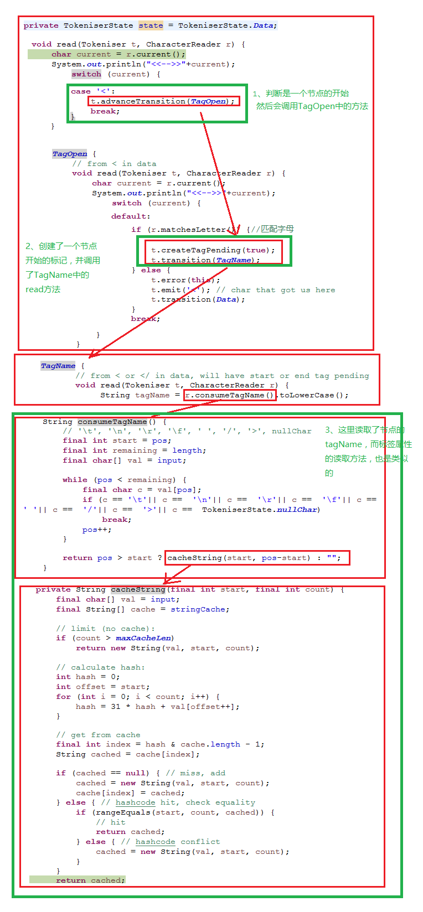

read方法的代码如下 Token read() { if (!selfClosingFlagAcknowledged) { error("Self closing flag not acknowledged"); selfClosingFlagAcknowledged = true; } while (!isEmitPending) state.read(this, reader); // if emit is pending, a non-character token was found: return any chars in buffer, and leave token for next read: if (charsBuilder.length() > 0) { String str = charsBuilder.toString(); charsBuilder.delete(0, charsBuilder.length()); charsString = null; return charPending.data(str); } else if (charsString != null) { Token token = charPending.data(charsString); charsString = null; return token; } else { isEmitPending = false; return emitPending; } } 而其核心逻辑在 while (!isEmitPending) //isEmitPending:是否开始到了tagName（指的是”<“以后） state.read(this, reader); 这两句代码，实现了判断开始标记，结束标记的功能（当然还会判断其他的） 以下是抽取tagName的方法调用链 